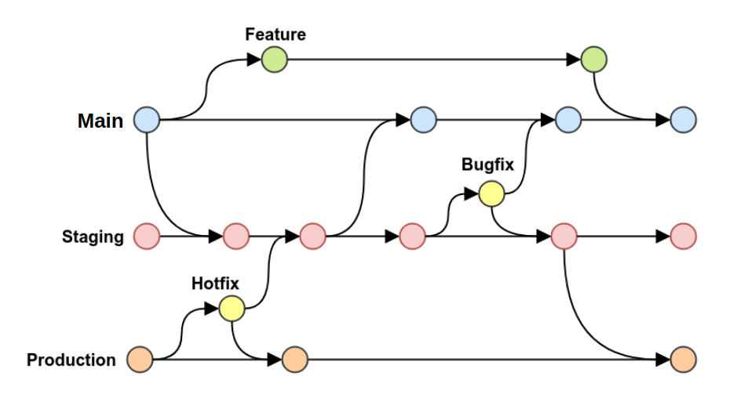

Fluxo do Git/Github
Comandos Git Comuns
git init → Inicializa um repositório vazio
git clone → Clona repositório remoto
git status → Mostra estado da árvore de trabalho
git add → Adiciona mudanças ao stage
git commit -m "msg" → Registra snapshot
git push → Envia commits ao GitHub
git pull → Sincroniza e integra mudanças
git branch → Lista ou cria branches
git merge → Mescla branches
git log → Histórico de commits